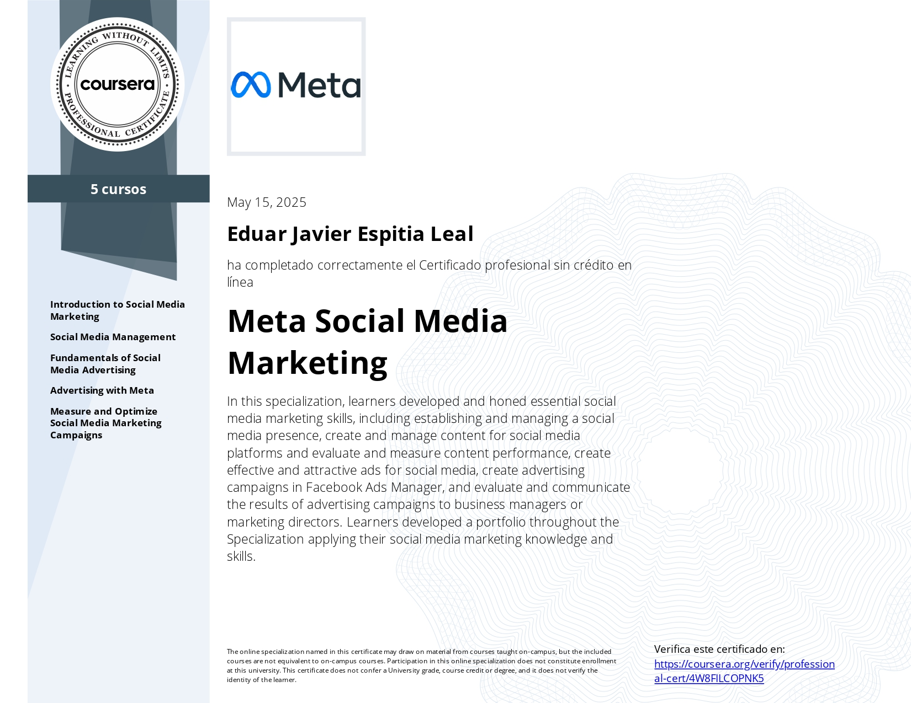
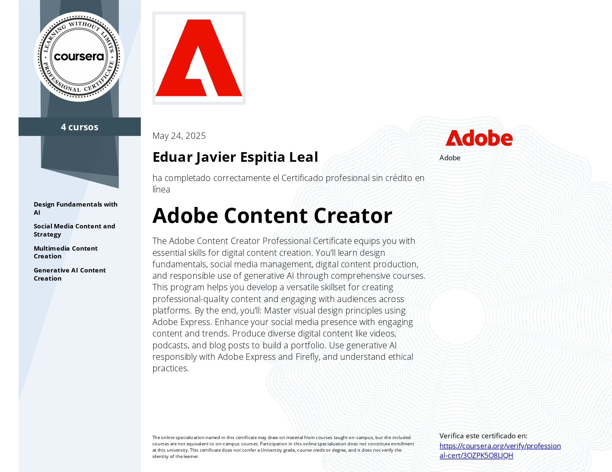
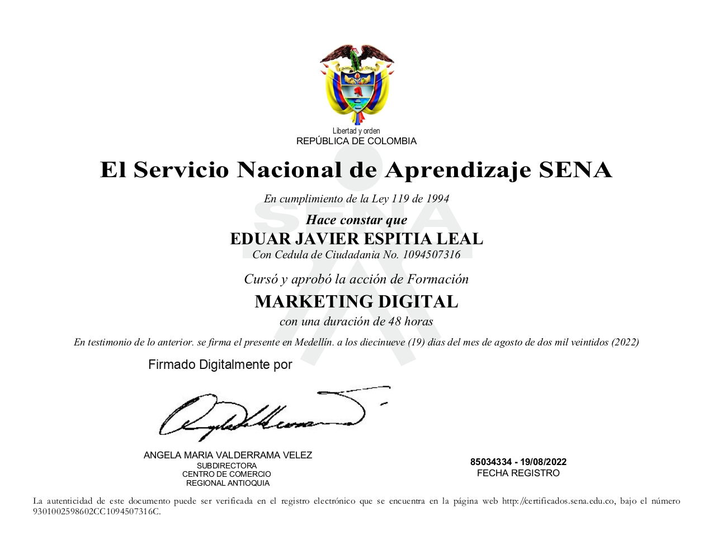

Contenido / pauta / dirección
Contenido que frena el scroll.
Pauta que llena tu WhatsApp.
Somos SEEdigital. Creamos video vertical, campañas de Meta Ads y sistemas con IA para negocios en Colombia. Eduar Espitia lidera el trabajo y hoy se desempeña como Growth Marketer en Yamaha.
+28.900 conversaciones iniciadas · +9,4 millones de visualizaciones en 6 meses con Yamaha
Datos completos · marzo—agosto 2026
Seis meses de resultados reales con Yamaha.
Lo que ves no es un mes bueno escogido: son seis meses seguidos, con altibajos, con sus datos completos.
(orgánico + pauta)9.517.690Facebook + Instagram
Transparencia de FacebookPauta 83% / Orgánico 17%
La barra separa las visualizaciones de pauta y orgánicas del mes seleccionado.
Conversaciones por mesAcumulado seleccionado
Conversación = mensaje iniciado por WhatsApp, Messenger o Instagram desde un anuncio. Datos de Meta Ads y de las estadísticas de contenido de Facebook e Instagram de Yamaha. Las cifras de campañas corresponden a las campañas destacadas de cada mes. El costo por conversación varía según la oferta.
Muestra de nuestro trabajo
Nuestro trabajo y los números que dejó.
Ganchos en los primeros segundos, edición dinámica, narrativa visual y pauta encima del contenido que ya funciona.
Muestra de nuestro trabajo con Yamaha. Son solo algunos de los videos del periodo.
Publicaciones que más rindieron
Agosto637.520visualizaciones · 746.246 personas alcanzadas · 72.893 interacciones · 2.095 seguidores
Abril300.425visualizaciones · 2.929 clics en el enlace
Mayo268.743visualizaciones · 2.404 clics en el enlace · 200 seguidores
Instagram, agosto851.400personas alcanzadas en el mes
El método
Un sistema que convierte atención en conversación.
Las primeras conversaciones llegan desde unas horas hasta un día después de activar la campaña.
Contenido
Creamos piezas con un gancho claro y una razón para seguir mirando.
Pauta
Distribuimos lo que tiene una oferta y un objetivo comercial concreto.
Conversación
Llevamos la intención hacia WhatsApp, Messenger o Instagram.
Seguimiento y mejora
Leemos los datos, ajustamos la oferta y probamos nuevas piezas.
IA como acelerador
Más piezas para probar, menos tiempo perdido y decisiones con datos.
Dónde uso IAGuiones y lluvia de ideas · variaciones creativas · apoyo en edición · análisis de campañas · investigación
Qué gana tu negocioMás ganchos probados, más piezas para comparar, entregas más rápidas y decisiones semanales con más datos.
El criterio y la dirección creativa siguen siendo nuestros.
Para quién trabajamos
Empezamos en motos y trabajamos con cualquier negocio que venda por conversación.
Automotriz y motos nuestra experiencia principalIndustrial y metalmecánicaRetail y modaBelleza y floresSaludAgro y servicios locales
Hemos trabajado con Yamaha, Ingesdec Metales, Innova Herrajes, Full Moda Shoes, Lydú Belleza, Flores Pordoquier, DLS Salud Pública y AML Mercados Agropecuarios.
Trabajamos con negocios que entienden cómo funciona la pauta y el contenido. No prometemos ventas: prometemos un sistema medible.
Servicios y precios
Elige el punto de partida.
Cada plan se puede abrir para ver el alcance. Extras y producciones especiales se cotizan aparte donde aplique.
¿Todavía no sabes qué necesitas? Pedir diagnóstico gratis — 15 minutos para ordenar el siguiente paso.
EE
Quién está detrás
Dirección creativa con las manos en el tablero.
Somos un equipo de producción multimedia y marketing digital. Trabajamos con video, pauta y páginas web desde 2018. Eduar lidera el contenido y las campañas de Yamaha.



Preguntas frecuentes
Lo importante, sin letra pequeña.
Siguiente paso
Cuéntame de tu negocio y te digo por dónde empezar.
Se abrirá WhatsApp con tu mensaje listo.